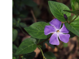
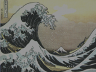
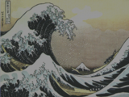

→
→This program has some library prerequisites. Please ensure you have GLFW 3 and GLEW installed. This program uses OpenGL for display purposes, and requires at least OpenGL 4.1. This version was originally chosen as it is the highest OpenGL version that Mac OSX supports. While it's probably not strictly required for this assignment, my renderer expects this version, and I unfortunately did not have time to refactor for 3.X support.
I've chosen not to use the provided starter code, instead opting to base my program on my OpenGL boilerplate that I've been using for graphics classes this year. The repository for this can be found on Github. My program allows for an interactive interface; the only command line my program accepts is a filename to open.
./imaging [filename]
My program supports many filetypes thanks to the image loading library stb_image that I am using. Specifically, all the provided images load, as well as any random .png, .bmp, and .jpg files that I have tried
Once a file is loaded, a window should appear with the image showing. To perform an operation, press Enter. Assuming your window manager is well-behaved, the window should disappear. Unfortunately, it seems that the Mac OS window manager does not respect GLFW's hide window command, so for this reason I request you use the Linux version for grading. Regardless, in the command window, you should see:
Enter a command:
If your window actually hid itself, the command prompt likely has focus. If not, click into it and enter a command and press enter. The command should execute. If any of the parameters are out of the specified range, the help message for that command will be shown and the command will not proceed.
The first command is help. Press enter and type help at the prompt. You should see a listing similar to the following:
help Available commands: undo edgeStrategy wrap/mirror/zero/clamp/random showConfig setUndoHistory [2, infinity]/unlimited save <filename>.<png/bmp> antialiasFilter nearestNeighbor/hat/mitchell grayscale sharpen contrast [-infinity, infinity] spiral [-infinity, infinity] [-infinity, infinity] saturation [-infinity, infinity] gamma [0, infinity] blur [3, 5, 7, ..., min(width, height)] brighten [0, infinity] translate [-width, width] [-height, height] ripple crop [0, width-1] [0, height-1] [1, width-1-x] [1, height-1-y] quantize [1, 8] scale (0 .. infinity] (0 .. infinity] mirror horizontal/vertical/both randomDither [1, 8] floydSteinberg [1, 8] edgeDetect [-infinity, infinity]
For each supported operation, the command to execute is listed, followed by the ranges of each operation. If the word "infinity" appears, that just means that there is no formal upper or lower bound to the argument. I make no promises that you can actually scale your image up to infinity, or that "infinity" is a literal that you can type in have work. Ranges use standard interval notation, so (0, 4] is 1, 2, 3, 4, where 0 is excluded and 4 is included.
The program maintains some state. Executing the showConfig command should result in output similar to:
showConfig Undo history size limit = 10 Current undo history size = 1 Edge handling strategy = mirror Antialiasing filter = nearest neighbor
Shown here are the default state values.
I've implemented a simple undo mechanism. Internally, a linked list of Images is maintained, and every new image operation creates a new image, which is pushed into the front of the list. Thus, in order to undo an operation, one just needs to pop the head off the list. The undo history is limited in order to avoid running out of memory.
Execute setUndoHistory n where n is a number greater than two to limit the history. Alternately, you can execute setUndoHistory unlimited to remove the limit. If you set the history to a number smaller than the current size of the undo history list, the oldest elements will be removed to bring the history under the size limit. Similarly, if your history grows too large, the oldest element in the list will be removed.
To save a file, one simply has to execture the command save filename. This will write a .png file with the given filename to the current directory. You can also force the program to write out a .bmp file by executing save filename.bmp. The image writing library that I am using is stb_image_write, which is not optimized for small file sizes. Unfortunately, this means that even the .png files produced will have fairly large file sizes. However, given that .png files are written by default, this means that alpha channels are supported by my program, and are generally considered by all the operations.
For several operations where one has to do "something reasonable" at the image edges, I've implemented several options. This can be set using this command.
→When in wrap mode, wrap-around behavior is used. For the range [0, 5], if one wants to get 6, they will instead get 0, and if one wants to get -1, they will instead get 5.
→When in mirror mode, mirroring behavior is used. For the range [0, 5], if one wants to get 6, they will instead get 4, and if one wants to get -1, they will instead get 2.
→When in zero mode, values outside the valid range are not returned. The end result is typically a continue statement inside a sum loop.
→When in clamp mode, values are clamped to the valid range.
→When in random mode, a random value is chosen from the valid range if a value outside the valid range is requested. Focus groups have determined that this behavior is "super useful."
The antialias filter to be used by scales and traslations can be set using this command. The three required filters (nearestNeighbor, hat, and mitchell) are all implemented and can be selected by name.
→ 0.5 → → 2.0 →
→ 2.0 →
Brighten multiplies each color channel by the given factor. Alpha is ignored.
 → -1.0 →→ 0.5 →→ 2.0 →
→ -1.0 →→ 0.5 →→ 2.0 →First the average luminance of each pixel is computed. After that, each pixel is linearly interpolated against the average luminance, using the contrast factor as the interpolation value.
→ -1.0 →→ 0.5 → → 2.0 →
→ 2.0 →
First the grayscale image is computed. Then each pixel is linearly interpolated against its corresponding pixel in the grayscale image using the saturation factor as the interpolation value.


Gamma is implemented using the formula: c_new = c_old^(1/gamma). Alpha is ignored. gamma(0) is implemented as a special case, where 0 is output for each pixel, unless its value is 1, in which case 1 is output. You can see the effect of this in the sample above, where all but a few pixels are driven to zero.
Crop simply copies the pixels from the requested region of the source image to the destination.